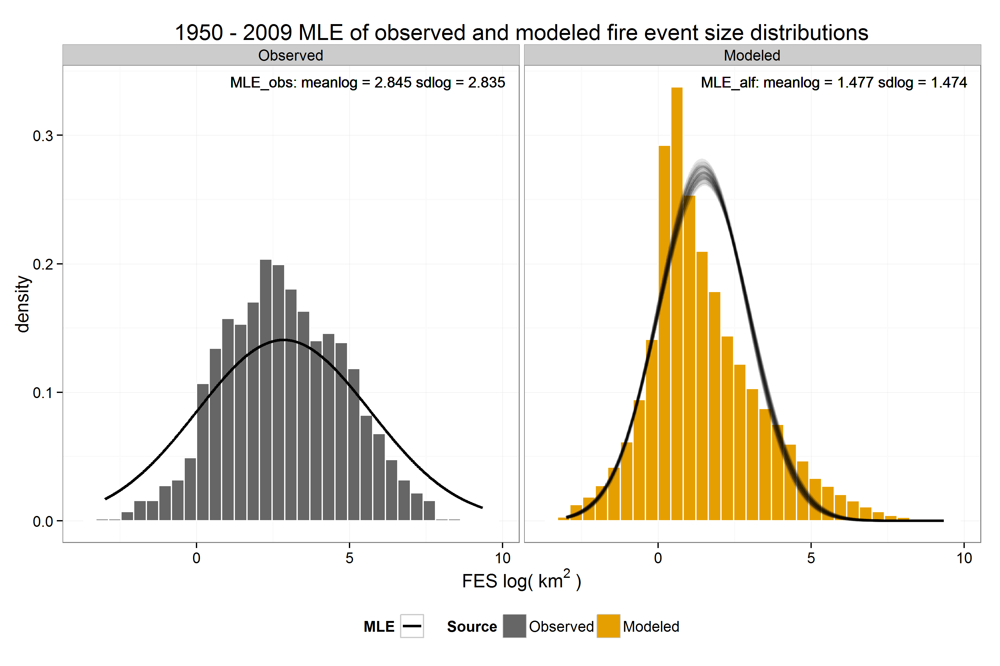
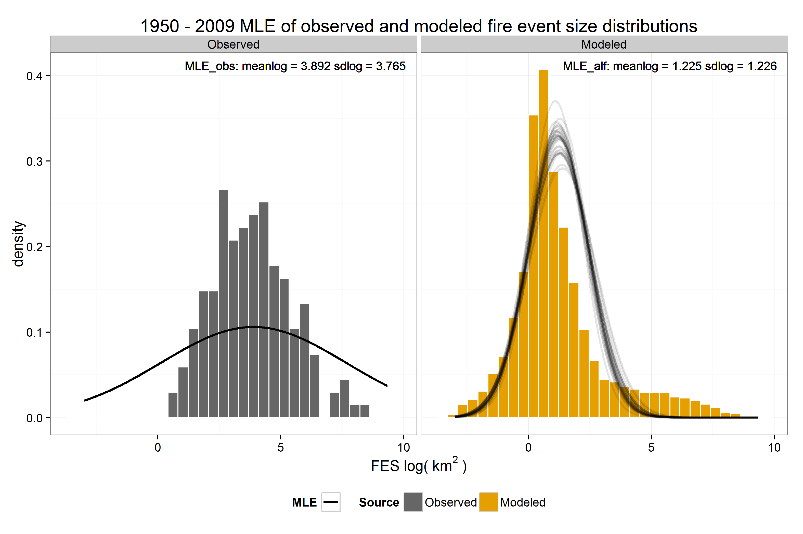
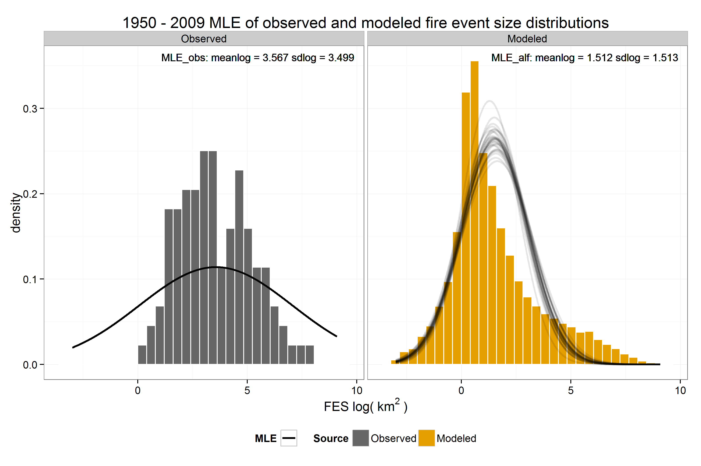
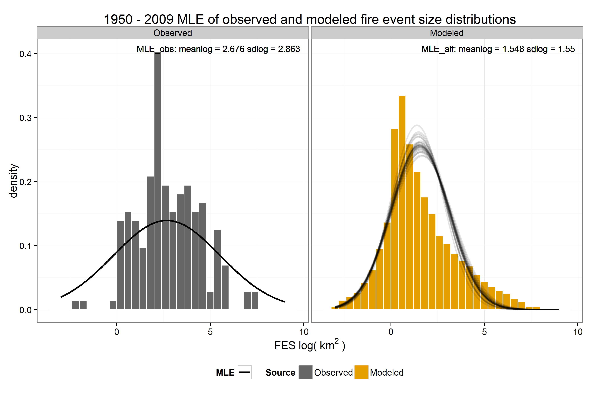
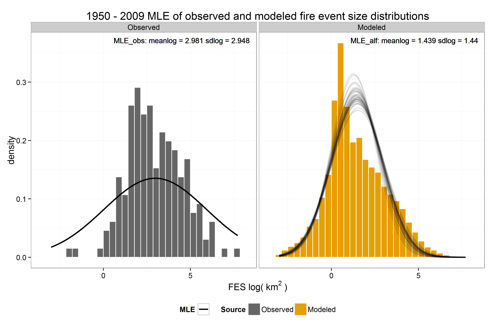
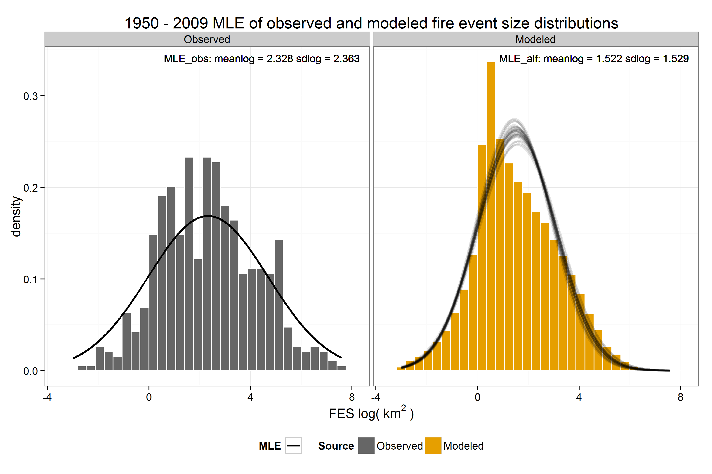
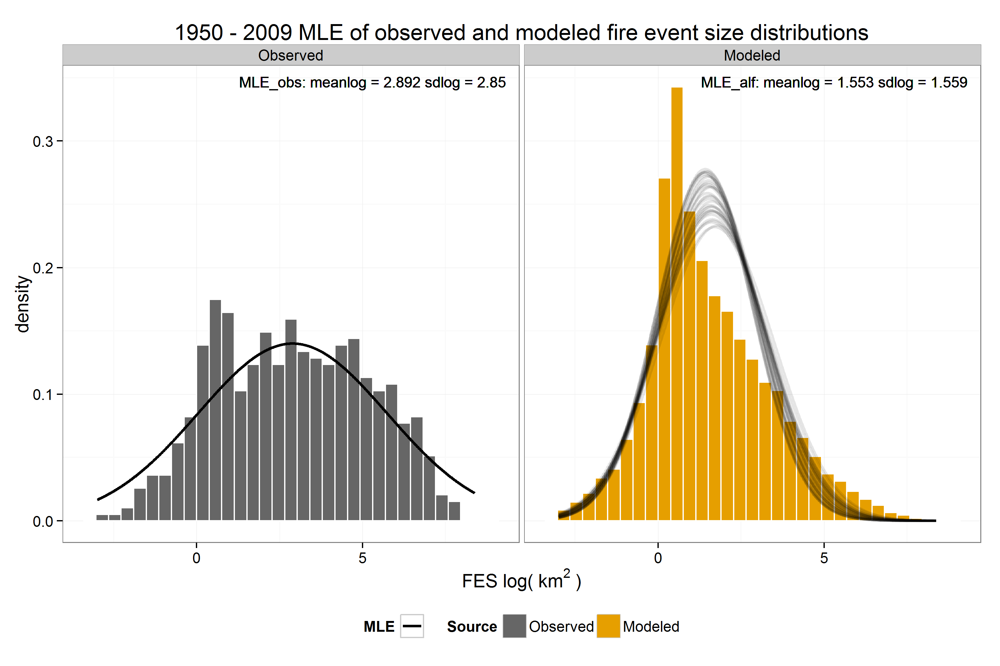

# statewide forest all years, all replicates
d.sub <- subset(d, Domain == "Statewide" & Vegetation == "Forest")
d.sub.stats1 <- d.sub %>% group_by(Replicate) %>% summarise(x_bar = mean(logFES),
s = sd(logFES)) %>% mutate(Decade = "All") %>% select(Decade, Replicate,
x_bar, s)
d.sub.stats2 <- d.sub %>% group_by(Decade, Replicate) %>% summarise(x_bar = mean(logFES),
s = sd(logFES))
d.sub.stats <- rbind(d.sub.stats1, d.sub.stats2)
pars <- do_mle_fes(d.sub, parvec = c(sdlog = 10, meanlog = 10), dec = dec, by.decade = TRUE)
pars.df <- lapply(1:length(pars), function(i, x, dec) {
x <- data.frame(do.call(rbind, args = x[[i]]))
x$Replicate <- factor(rownames(x), levels = rownames(x))
names(x)[1:2] <- c("mu_hat_mle", "sigma_hat_mle")
x$Decade <- dec[i]
rownames(x) <- NULL
x[, c(4, 3, 1, 2)]
}, x = pars, dec = c("All", dec))
pars.df <- do.call(rbind, pars.df)
full_join(d.sub.stats, pars.df)## Source: local data frame [231 x 6]
##
## Decade Replicate x_bar s mu_hat_mle sigma_hat_mle
## 1 All Observed 2.839774 1.984117 2.844931 2.834702
## 2 All Rep 0 1.518480 1.815703 1.521980 1.515901
## 3 All Rep 1 1.490247 1.802722 1.493386 1.488039
## 4 All Rep 2 1.477471 1.797860 1.467744 1.487088
## 5 All Rep 3 1.497242 1.782430 1.496343 1.497329
## 6 All Rep 4 1.454071 1.823902 1.448055 1.460919
## 7 All Rep 5 1.465886 1.812818 1.463407 1.468283
## 8 All Rep 6 1.475613 1.786698 1.478885 1.473632
## 9 All Rep 7 1.477484 1.822702 1.464642 1.491057
## 10 All Rep 8 1.463652 1.790101 1.462065 1.462848
## .. ... ... ... ... ... ...(p05a <- plot_mle_fes(d.sub, pars[1]))
for (i in 1:length(dec)) print(assign(paste0("p05", letters[i + 1]), plot_mle_fes(subset(d.sub,
Decade == dec[i]), pars[i + 1])))     